One Saturday I went on a bus trip to Malmö and Lund. We rode a bus across the bridge to Sweden, and toured Malmö, a smaller city in southern Sweden, and Lund, a university city. I don't remember taking any pictures in Malmö, as I met some friendly Europeans and we sat in a coffee shop (in Sweden) with an English menu (because coffee shops are an American invention, said the man behind the counter), and talked of life at home and abroad. I never saw the two of them again, but they were quite awesome, and I kind of wish I had.
At any rate, we also stopped in a shoe store and the German girl bought some blue Pumas (from the kids section) while the Austrian and the Frenchman raved at the low shoe prices. It was quite humerous because the store was closing, and it was clearly somewhat annoying there were still people trying to buy shoes. . .
Which all reminds me of a running joke. If a Frenchman and a German meet on the street, what language will they speak? English. But anyways.
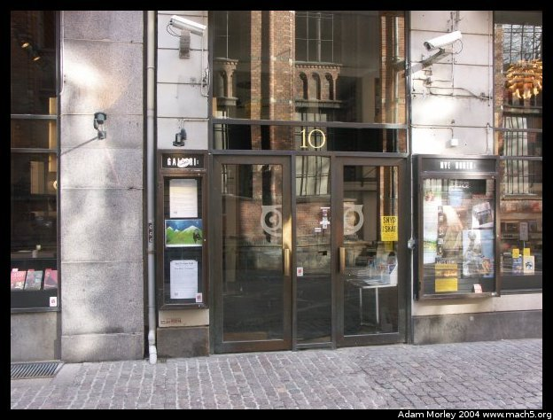
On the way to the bus, I happend upon a storefront. See if you can find what I saw.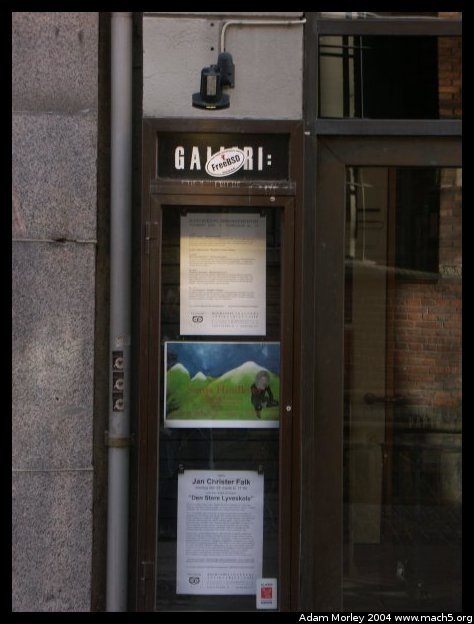
Yep, there it is. FreeBSD. So I've seen and photographed NetBSD and FreeBSD stickerings, and I saw an OpenBSD one, but I don't know if I got a picture. NetBSD stickers are on many different items, FreeBSD ones are less common and OpenBSD ones seem to be rare.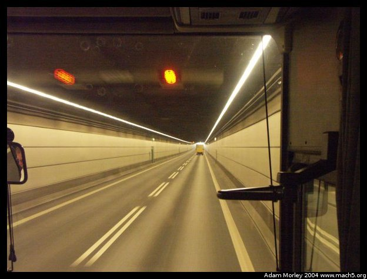
Our bus went past the airport, and then down under the sea into a tunnel. The trains and cars both go into the underground tunnel which pops up on an artifical island to transition to the bridge superstructure.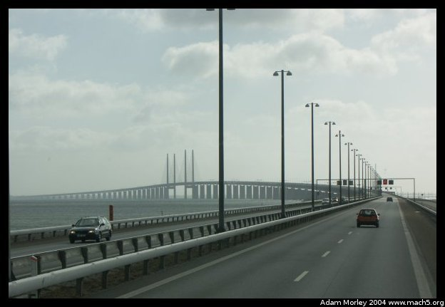
The bridge superstrcuture after coming out of the tunnel.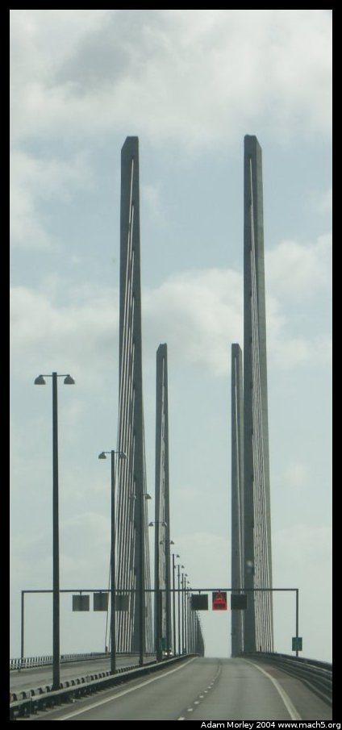
Up close to the bridge itself. It is tall enough so that Finnish oil rigs can pass under this part of the bridge.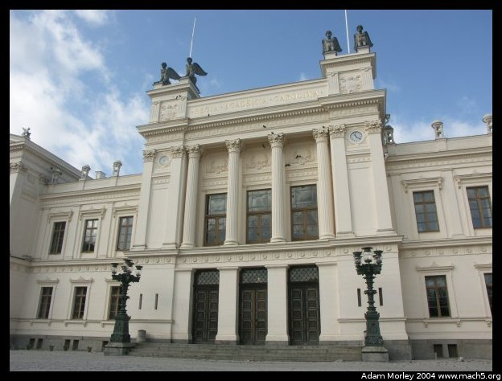
One of the university buildings in Lund.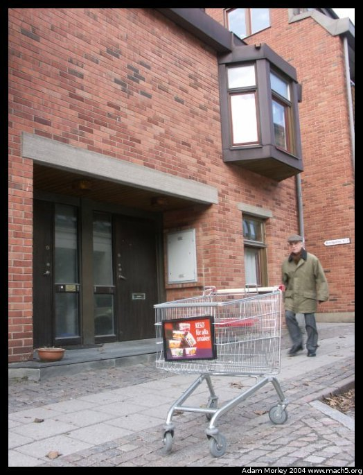
A Euro shopping cart. Four wheel steering.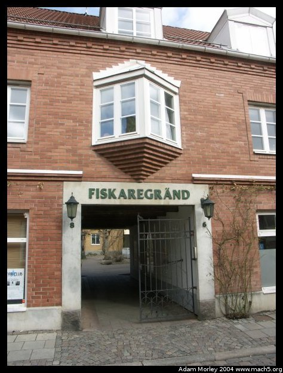
I love brick.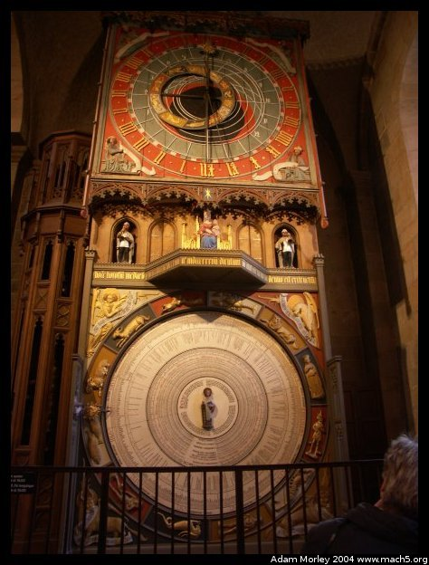
This is the famous wooden clock in the church in Lund. Little figures come out and go around. I have a movie. It's not terribly exciting, but the clock itself is amazing. There is also fairly good falafel to be had a block south of the church.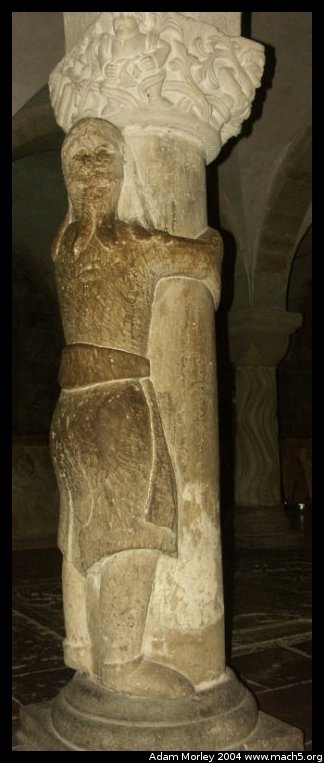
This guy hugs a pillar in the crypt.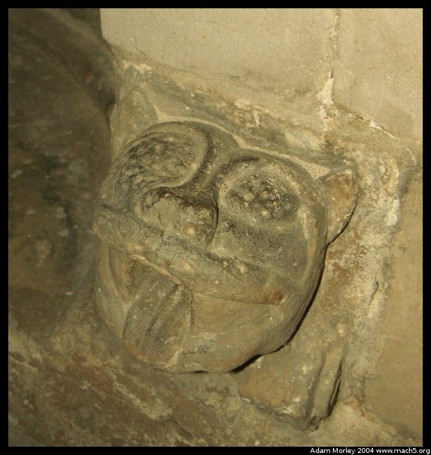
And this guy *is* a pillar!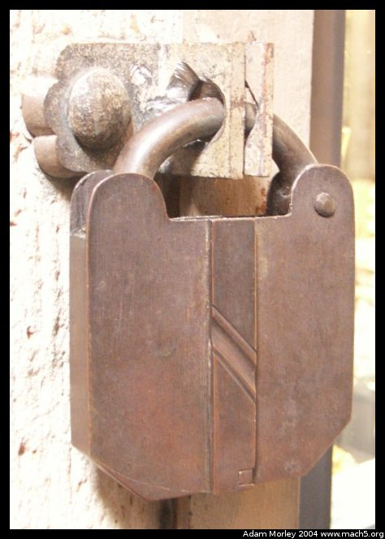
A lock near the church altar. The keyhole is behind the middle piece --- it swings into place by the force of gravity.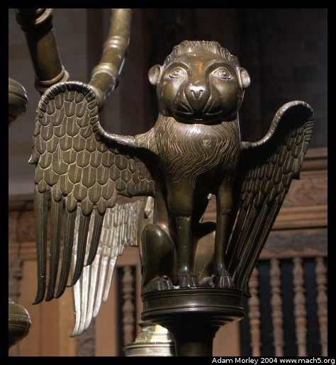
A close up of one of the figures on a candle holder.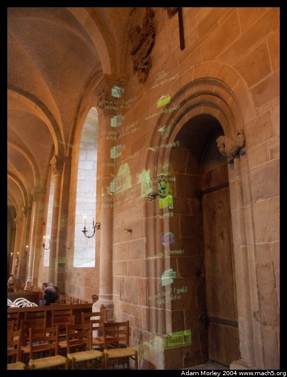
Windows 2005: Church version. Seriously, though. I saw quite a few instances of projectors in churches. It seemed somewhat odd.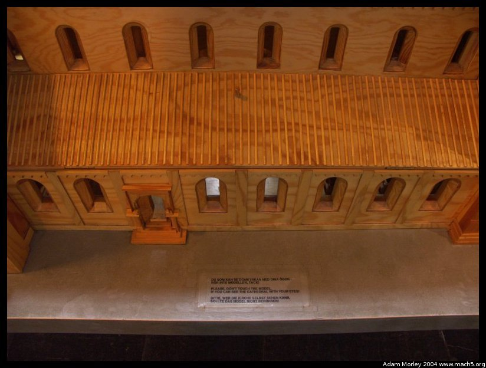
The English says, "Please don't touch the model, if you can see the cathedral with your eyes!" Translated from Swedish, it says, "If you can see the church with your eyes, don't touch the model." I don't know why the translater reversed the phrasing. However, I do know why they said "if you can see the cathedral with your eyes."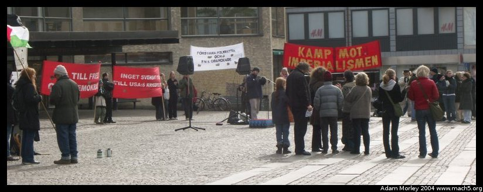
While in Lund, there was a protest. Near as I can remember and read the signs now, it was against the USA's policies abroad. A common sentiment everywhere but the USA is that the USA is exceedingly lacking in its understanding of the world.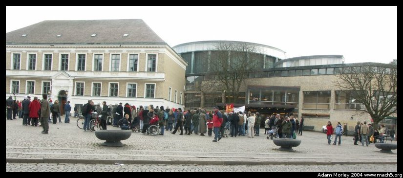
The crowd was fair sized, with young, old, and kids in strollers.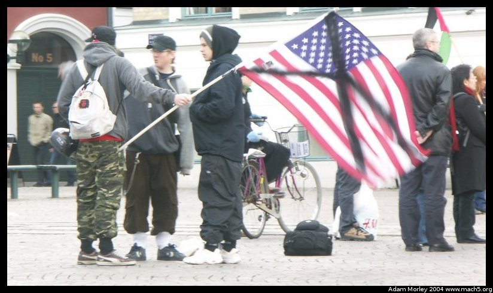
There were even the usual radical types.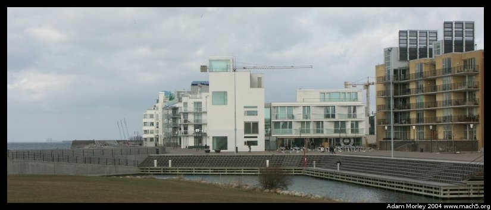
I did, apparently, take some pictures of Malmö. You can just barely see the coffee shop I went to with my Euro shoe-shoppers (see the tables?).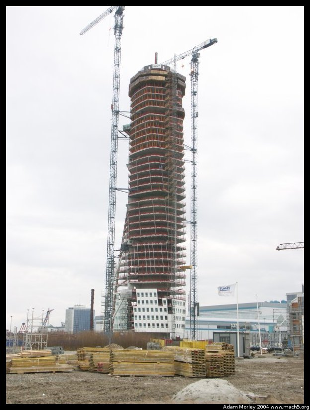
This is the "twisting torso" (or maybe it was tower) as it is called. It's a tall condo complex in the "City of the Future" (I never really found out why it's the city of the future, it seemed like an odd place). This condo building either rotates or looks like it rotates. Somebody said it rotates. Somebody else said it looks fast, but isn't fast, if you get my drift. I guess I just have to go back and find out.There are more Malmö pictures from when my parents came to visit Copenhagen.
Adam can be reached at adam dot morley at gmail dot com